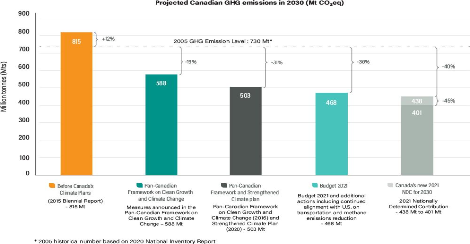
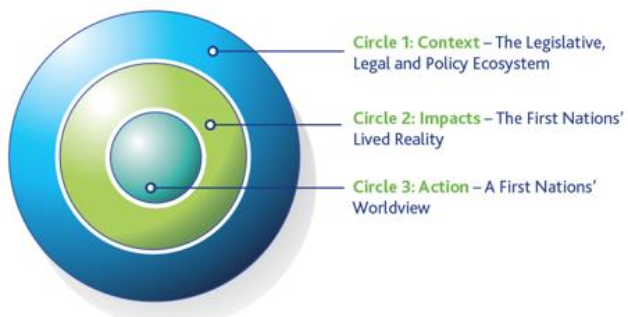

Through this submission, the Government of Canada is pleased to update its nationally determined contribution (NDC) under the Paris Agreement. Canada’s updated NDC is to reduce emissions by 40-45% below 2005 levels by 2030, a substantial increase of ambition beyond Canada’s original NDC, as previously communicated upon ratifying the Paris Agreement in 2016. Additionally, Canada is committed to reducing its emissions to net-zero by 2050. Canada’s enhanced NDC, and accompanying information for clarity, transparency, and understanding, are further outlined in Annex 1 to this submission. Annex 2 outlines provincial and territorial climate action and Annex 3 outlines Indigenous climate action.
Canada recognizes that any country today that is not developing a strategy and policies to move towards a nature-positive, carbon-neutral economy risks losing out in the global transition that is increasingly turning into a sprint. With less than a decade left to 2030, and with countries around the world quickly moving to a cleaner economy, Canada’s enhanced NDC is ambitious, necessary and achievable—reflecting both the scale of the climate crisis and economic opportunity that climate action presents.
Canada’s actions to address climate change at home and abroad are guided by the Paris Agreement goal of holding the increase in the global average temperature to well below 2oC above pre-industrial levels, and pursuing efforts to limit the temperature increase to 1.5oC. The biggest companies in the world, the leading investors in the world, dozens of countries, hundreds of cities, and many millions of consumer transactions are pushing in the same direct ion. Public sentiment has been racing ahead of government ambition.
Recent scientific reports have clarified the need for significant policy action. The 2018 Intergovernmental Panel on Climate Change Special Report on Global Warming of 1.5oC found that to keep global warming below 1.5oC, net human caused emissions of CO 2 need to fall globally by about 45% below 2010 levels by 2030 and reach net-zero around 2050. The February 2021 NDC Synthesis report, prepared by the United Nations Framework Convention on Climate Change (UNFCCC), found that the world is not on track to meet the Paris Agreement goals. Climate science has made it clear that a deep transformation is needed to achieve the Paris Agreement’s climate goals, and that such transformation must start early and result in deep emission reductions even before 2030. These scientific assessments have created the groundwork for a global call for all countries to set and work towards more stringent NDCs. The Government of Canada is answering this call by enhancing its NDC in line with Canada’s highest possible ambition and climate science.
In addition, Canada’s Changing Climate Report, a study led by Environment and Climate Change Canada and released in the spring of 2019, provided an assessment of current knowledge about how and why Canada’s climate has changed, and what changes are projected for the future. The report found that on average, Canada is warming about twice as fast as the global average, and three times faster in the North. Even as Canada works towards reducing its greenhouse gas (GHG) emissions, Canadians are feeling the impacts of climate change.
In addition to addressing greenhouse gases covered under the UNFCCC and the Paris Agreement, Canada is taking action to reduce short-lived climate pollutants such as black carbon, which is of particular significance to Canada as an Arctic State due to its darkening impact over ice and snow, and hence its contribution to near-term Arctic warming. Canada remains committed to phase out ozone-depleting substances covered under the Montreal Protocol, many of which are also greenhouse gases.
Over the past five years, the Government of Canada has made an intensive national effort to put in place the measures needed to put Canada on a path to significantly reduce emissions in a way that ensures all sectors and parts of the country can participate and thrive in the increasingly low-carbon economy.
In 2016, Canada’s First Ministers adopted the Pan-Canadian Framework on Clean Growth and Climate Change (PCF), Canada’s first national climate change plan to reduce GHG emissions, accelerate clean economic growth, and build resilience to a changing climate. The PCF was developed with provinces and territories and with input from Indigenous Peoples, businesses, non-governmental organizations, and Canadians. The PCF features individual and joint federal, provincial and territorial measures under four pillars: Pricing carbon pollution; Complementary actions to reduce emissions; Adaptation and climate resilience; and Clean technology, innovation and jobs.
In collaboration with provinces, territories, and Indigenous Peoples, Canada has made significant progress in implementing measures in the PCF to make progress towards Canada’s original NDC. In 2015, prior to the PCF, Canada’s emissions were projected to increase indefinitely, reaching 815 megatonnes (Mt) in 2030 (12% higher than 2005 levels). The PCF is bending Canada’s emissions curve downward and is leading to historic emissions reductions. With the PCF and all other announced climate measures, Canada’s 2030 emissions are now projected to be 468M t, 347Mt lower than projected in 2015, or 36% below 2005 levels. Canada is committed to implementing the PCF. The annual Synthesis Report1 on the Status of the Implementation of the PCF is published online annually to provide Canadians with information on the progress being made by all levels of government.
Released on December 11, 2020, A Healthy Environment and a Healthy Economy, Canada’s strengthened climate plan (SCP) includes federal policies, programs and investments to accelerate emissions reductions and build a stronger, cleaner, more resilient and inclusive economy. Since October 2020, the Government of Canada has provided $53.6 billion for a green recovery. This includes the SCP’s $15 billion in investments, $17.6 billion in the Government of Canada’s 2021 Budget, $6 billion in the Canada Infrastructure Bank’s Growth Plan and an additional $14.9 billion for public transit and active transportation projects over the next eight years, which includes permanent funding of $3 billion per year for Canadian communities beginning in 2026-27.
A Healthy Environment and a Healthy Economy builds on the 2016 PCF and is a key pillar in the Government’s commitment to create over one million jobs, restoring employment to pre - pandemic levels. It will establish the building blocks to achieve a cleaner, more competitive and resilient economy and put Canada on the path to net-zero emissions by 2050.
The SCP is built on five pillars:
Making the Places Canadians Live and Gather More Affordable by Cutting Energy Waste: Together, homes and buildings account for 13% of Canada’s GHG emissions. Electricity use for cooling, lighting and appliances brings the total to 18%. Investing in energy efficiency and fuel switching in Canada’s building stock will result in immediate benefits. This will help set the stage for a resilient buildings sector composed of net-zero carbon buildings powered by clean electricity, and more green jobs. Continued support for innovation will provide an important complement to building codes, to ensure that energy efficient technologies continue to reduce costs and emissions.
The Government of Canada will:
Reduce emissions and energy costs of homes by creating a $2.6 billion Canada Greener Homes Grant initiative with grants of up to $5,000, and investing $4.4 billion to help homeowners complete deep home retrofits through interest-free loans worth up to $40,000.
Continue working on low-income retrofit programs with the provinces and territories to increase the number of households that benefit from energy retrofits.
Invest $1.5 billion to support green and accessible retrofits, repairs or upgrades of existing public community buildings, and the construction of new, publicly accessible community buildings that serve high-needs, underserved communities across Canada.
Invest $2 billion in financing large-scale commercial and public building retrofits as part of the Canada Infrastructure Bank’s $10 billion Growth Plan.
Advance additional actions including continuing to develop the first model ‘retrofit’ code for existing buildings by 2025 and a net-zero energy ready building code for new buildings, developing a low-emissions building materials supply chain, and conducting Canada’s first-ever national infrastructure assessment.
Making Clean, Affordable Transportation and Power Available in Every Canadian Community: Transportation accounts for over a quarter of Canada’s emissions. Accelerated efforts are needed to reduce those emissions while continuing to enable the many essential services that an effective transportation system provides. Moving forward, key opportunities include supporting the development and deployment of low and zero-emissions technologies, and ensuring that Canadian companies can capitalize on opportunities to manufacture zero -emissions parts and vehicles in Canada, while also expanding the market for clean fuels.
Canada is a world leader in zero-carbon power, generating approximately 82% of its electricity from non-emitting sources, such as water, wind, solar and nuclear. Moving forward, emphasis will be placed on ensuring that Canada is prepared for the accelerated electrification of key sectors and can meet increased demand with new sources of non-emitting electricity.
The Government of Canada will:
Require 100 % of new light-duty vehicle and passenger trucks sold in Canada to be zero- emissions by 2035, a commitment supported by pursuing a combination of supportive investments and regulations.
Invest $287 million to extend the Incentives for Zero-Emissions Vehicles program beyond its $300 million initial investment, and invest an additional $150 million in charging and refueling stations across Canada.
Work with partners, domestically and internationally, to reduce emissions from other modes of transportation, which can be challenging to abate, including heavy-duty vehicles, rail, marine, and aviation operations.
Advance the national active transportation strategy by investing $400 million for Canada’s first active transportation fund, drawn from an investment of $14.9 billion for public and active transportation, which also includes $3 billion annually in permanent public transit funding beginning in 2026-27.
Work with the United States to align with the most ambitious light-duty and heavy-duty vehicle standards whether at the state or federal level.
Invest $964 million in smart renewable energy and grid modernization projects, as well as continue to work with provinces and territories to help build key intertie projects.
Commit to powering rural, remote, northern and Indigenous communities that currently rely on diesel with clean, reliable energy by 2030.
Advance additional measures, including working with partners to enable Canada’s electricity generation to achieve net-zero by 2050, building Canada’s battery and critical mineral supply chains to support a clean energy transition, and launching a Small Modular Reaction Action Plan.
Continuing to Ensure Pollution isn’t Free and Households Get More Money Back: Pricing carbon pollution is the most efficient way to reduce GHG emissions while also driving clean innovation. Putting a price on carbon pollution sends a broad signal across the economy that encourages individuals and businesses to take climate action. Canada has a robust and innovative carbon pricing approach where its subnational provinces and territories can design their own pricing systems, as long as they meet minimum federal stringency standards. These systems range from a cap-and-trade system for GHG emissions in Québec to a carbon tax in British Columbia. In provinces and territories that request it, or that do not implement systems that meet the minimum federal stringency standards, the federal carbon pricing system applies. The federal system includes two parts: a fuel charge and an output-based pricing system (OPBS) for industrial facilities.
The Government of Canada will continue to put a price on pollution, increasing the benchmark price by $15 per tonne per year, starting in 2023, rising to $170 per tonne of carbon pollution in 2030, with the continued provision of rising rebates in jurisdictions where the backstop applies. A Clean Fuel Standard, a regulation that will reduce the GHG emissions from produ cing and using liquid fossil fuels in Canada, as well as a federal GHG offset system will complement carbon pricing. To ensure that Canada transitions to a low-carbon economy in a way that is fair and predictable for our businesses and supports Canada’s international competitiveness, the Government of Canada will also explore the potential of border carbon adjustments, including by working with like-minded economies. Canada is also exploring and co-developing solutions with Indigenous Peoples to ensure carbon pricing works for them and their communities.
Building Canada’s Clean Industrial Advantage: Canada’s industrial sectors, such as manufacturing, iron and steel, chemicals, mining, cement, and oil and gas, accounted for 37% of Canada’s emissions. To move beyond incremental reductions, a key focus will be on supporting the rapid scale-up of existing and new, strategic clean technologies and the market for clean fuels in Canada. By reducing pollution from natural resource development and heavy industry , Canada will position itself as a global provider of choice for many of the world’s essential goods.
The Government of Canada will:
Initiate a Net-Zero Challenge for large emitters to help Canadian industries develop and implement plans to transition their facilities to net-zero emissions by 2050, which will be launched in the fall of 2021.
Expedite decarbonization projects with large emitters and scale up clean technology through the Strategic Innovation Fund’s $8-billion Net-Zero Accelerator Fund.
Introduce an investment tax credit for capital invested in carbon capture, utilization and storage projects, with the goal of reducing emissions by at least 15Mt of CO2 annually. Consultations are underway to determine the design of the tax credit, including its rate. This will be supported by $319 million for research, development and demonstrations to improve the commercial viability of carbon capture, utilization, and storage technologies.
Invest $1.5 billion in a Clean Fuels Fund to help grow clean fuels markets in Canada, implementing the Hydrogen Strategy for Canada and introducing an accelerated capital cost allowance for clean energy equipment, including equipment to prod uce and dispense hydrogen, and equipment to produce solid and liquid fuels (e.g., wood pellets and renewable diesel) from specified waste material or carbon dioxide.
Further reduce emissions in the agricultural sector by investing $165.7 million to support clean technologies in the agriculture sector, on-farm climate action (e.g., improve nitrogen management, increase adoption of cover cropping), and setting a national emissions reduction target of 30% below 2005 levels from fertilizers.
Advance additional actions: exploring a continental approach to address methane emissions from the oil and gas sector, including investing $750 million onshore and offshore to help oil and gas companies implement green solutions to reduce methane and other GHG emissions; establishing national methane regulations for large landfills and taking additional measures to reduce and better use waste at these sites; expanding Canada’s clean technology sector through significant investments (e.g., $1 billion to help attract private sector investments in large-scale clean technology projects) and implementing tax measures.
Embracing the Power of Nature to Support Healthier Families and More Resilient Communities: The world is currently facing the dual crises of climate change and biodiversity loss. While nature is under threat, it is our very best ally in the fight against climate change. This is why the Government of Canada is investing heavily in nature: to help sequester and store carbon; to achieve co-benefits for biodiversity and human well-being, such as restoring habitats; to enhance resilience to the impacts of a changing climate; and to create jobs to help support a green economic recovery.
The Government of Canada will:
Invest more than $3 billion over 10 years to plant two billion trees. To further boost carbon sequestration, Canada is investing $631 million to restore and enhance wetlands, peatlands, grasslands and agricultural lands, as well as to improve land management practices, and conserve carbon-rich ecosystems.
Provide climate action programs for farmers, including the $185 million Agricultural Climate Solutions Program and the $165 million Agricultural Clean Technology Program with an additional $200 million to launch immediate, on-farm climate action, targeting projects that accelerate emission reductions by improving nitrogen management, increasing adoption of cover cropping, and normalizing rotational grazing.
Increase funding for Indigenous Protected and Conserved Areas and Indigenous Guardians programs with a portion of the recent investments of $2.3 billion in Canada’s Nature Legacy Initiative, to help address the biodiversity crisis, fight climate change, and protect and create jobs.
Federal leadership is only part of Canada’s story. Several provinces and territories have committed to deep GHG emissions reduction targets—for both 2030 and 2050. Additional provincial and territorial measures, including those that could build on new federal measures and investments, will be essential to further emission reductions, especially considering the environment is a shared jurisdiction in Canada. See Annex 2 for more details on action Canada’s provinces and territories are taking to address climate change.
Consistent with the Paris Agreement’s call to respect, promote and consider Indigenous rights when taking action on climate change, the Government of Canada is committed to renewed nation-to-nation, Inuit-to-Crown and Government-to-Government relationships with First Nations, Inuit, and the Métis Nation, based on the recognition of rights, respect, cooperation, and partnership. The Government of Canada also supports without qualification the United Nations Declaration on the Rights of Indigenous Peoples, and supports Indigenous approaches and ways of doing by acknowledging Indigenous Knowledge systems as an equal part in policy development, programs, and decision-making. Supporting self-determined climate action is critical to advancing Canada’s reconciliation with Indigenous Peoples, as is the leadership of Indigenous Peoples to achieve the foundational transformations required to address and mitigate the consequences of climate change.
The compounding and interconnected impacts of climate change, lower socio-economic outcomes, colonial legacies, and disparities in access to clean technologies have had and continue to have an important impact on Indigenous Peoples’ wellbeing. To support Indigenous Peoples in adapting to the changing climate and contributing to national decarbonization efforts, the Government of Canada has been and will continue to partner with First Nations, Inuit, and the Métis Nation to position Indigenous climate leadership as a cornerstone of Canada’s Strengthened Climate Plan and ensure that federal initiatives support Indigenous Peoples’ climate priorities and ambitions. As the main pillar of this partnership, Indigenous climate leadership means investing in the agency of Indigenous Peoples and communities, supporting Indigenous- led and delivered solutions, equipping Indigenous Peoples with equitable resources, and ensuring appropriate and timely access to funding to implement self-determined climate action. With a diversity of unique experiences and knowledge related to the environment and climate change, the voices of Indigenous women, youth, Elders, 2SLGBTQQIA, and persons with disabilities are an essential part of climate leadership and action. See Canada’s Strengthened Climate Plan, Canada’s 2020 Report on Climate Science 2050, the Expert Panel on Climate Change Adaptation and Resilience Result’s 2018 report, and Annex 3 for more details on Indigenous climate leadership and Indigenous climate priorities.
The Government of Canada uses a recognized energy and macroeconomic modeling framework2 to produce emissions projections to 2030, which are published annually. Canada’s 2020 Greenhouse Gas and Air Pollutant Emissions Projections (http://www.publications.gc.ca/site/eng/9.866115/publication.html ), published in early 2021 used ECCC’s unique suite of models.3 The modeling published with the SCP in December 2020 included federal, provincial and territorial climate actions up to and including the SCP, estimating Canada’s 2030 GHG emissions based on the proposed changes in carbon pricing, the Clean Fuel Standard, complementary sectoral measures, and nature-based solutions. The modeling projected that sectoral and economy-wide measures are expected to reduce Canada’s GHG emissions by 144 Mt by 2030, relative to 674 Mt of GHG emissions in 2030 under the 2020 Reference Case (the 2020 Reference Case only includes all policies and measures funded, legislated and implemented by federal, provincial and territorial governments as of September 2020). The SCP modeling projected that the accounting contribution from land use, land-use change and forestry (LULUCF), plus the expected impact of the proposed nature-based solutions and the measures in the plan to reduce emissions from fertilizer use in agriculture would further reduce emissions by 27 Mt. The SCP modeling projected Canada’s net emissions in 2030 would fall to 503 Mt (equivalent to at least 31% below 2005). Factoring in the Government of Canada’s 2021 budget measures and additional actions, such as continued alignment with the United States, Canada’s 2030 emissions would fall to 473 Mt (equivalent to at least 36% below 2005 levels).

The modeling likely underestimates emission reductions because it does not capture the full range of innovative technologies that are in the early stages of the commercialization process nor does it reflect the likely improvements in technology performance or cost reductions. Moreover, these projections do not fully account for the reality that Canada is just starting along the innovation curves associated with some of the most promising decarbonization technologies, such as ZEVs, industrial electrification, carbon capture, utilization and storage, and hydrogen.
Investments in clean technology and innovation will accelerate the development of the next generation of technologies. As Canada and the rest of the world continue to invest in these and other areas, innovation will accelerate and costs will decline, as witnessed with rene wable energy. Over the longer-term, these technologies will not only reduce GHG emissions but also enhance Canadians’ quality of life, help Canadian companies create jobs and allow them to compete successfully in the global transition to net-zero emissions.
In addition, investor decisions by leaders in the private and financial sectors will also drive and accelerate reductions as companies move to capitalize on the growing demand for low -carbon products and services. In a North American context, there will continue to be increased opportunities for regulatory harmonization, which will also help advance technology development and deployment.
The Government of Canada will also continue working with its partners to identify and support new climate actions.
Addressing climate change requires the participation of all Canadians, as well as inclusive measures that mitigate the impacts of climate change on underrepresented and marginalized groups. Canada is committed to supporting workers and their communities as the world moves toward a low-carbon, net-zero future. At its core, the work on just transition is underpinned by a firm belief that Canada cannot reach net-zero without the participation, know-how and innovative ideas of all Canadians. People and communities must be at the heart of climate action to ensure that all Canadians are empowered to benefit from the green transformation and that no one is left behind.
The Government of Canada is committed to ensuring that Canada transitions to a net-zero emissions economy in a way that promotes economic diversification and jobs. Canada’s climate plan will invest in new markets for low-carbon, made-in-Canada solutions, and these increased investments will create jobs. As the global market continues to demand cleaner products and services, the Government will help Canada’s workforce take advantage of this opportunity. This includes supporting Canadians as they build new skills in growing sectors, helping workers receive the education and accreditation they need, strengthening workers’ futures by connecting them to employers and good jobs, and ensuring that underrepresented Canadians, including women, racialized Canadians, persons with disabilities, Indigenous Peoples and youth have equitable access to those opportunities. To that end, the Government of Canada is investing $1.2
billion to deliver almost 500,000 new training and work opportunities. This includes through the new Sectoral Workforce Solutions Program, which will help connect Canadians with the training they need to access good jobs in sectors, such as clean energy where employers are looking for skilled workers. The Government of Canada is also investing $225 million in the Future Skills initiative to ensure Canada’s skills development aligns with labour market trends. The Government of Canada remains committed to developing legislation to support the future and livelihood of workers and their communities in the transition to a low-carbon economy.
Canada supports the UNFCCC Gender Action Plan to further advance women-led and gender- responsive climate action at national and multilateral levels. The plan will support women’s participation in climate negotiations, strengthen gender-responsive policy development, and raise awareness of gender and climate change issues. The Government of Canada is committed to using Gender Based Analysis Plus (GBA+), an analytical process that provides a rigorous method to assess systemic inequalities, across the federal government to advance gender equality in Canada. This analysis was completed on the SCP. The Government will conduct additional GBA+ analyses for each policy and program to maximize positive benefits for those most impacted by the negative effects of climate change, including low-income Canadians, women, Indigenous communities, and people living in rural and remote areas.
Canada is committed to reaching net-zero GHG emissions by 2050. The Canadian Net-Zero Emissions Accountability Act, which received Royal Assent on June 29, 2021, codified the Government of Canada’s commitment for the country to achieve net-zero GHG emissions by 2050.
This legislation requires the Government of Canada to set national emissions reduction targets at five-year intervals for 2030, 2035, 2040, and 2045, and to develop emission reduction plans for each target as well as explain how each plan would contribute to reaching net-zero in 2050. The Government will engage key stakeholders and partners such as provincial and territorial governments, Indigenous Peoples, and the Net-Zero Advisory Body, among others, in setting these national targets. The Intergovernmental Panel on Climate Change (IPCC) has identified that achieving net-zero emissions by about 2050 and achieving deeper near term emission reductions by 2030 are key to limiting warming to 1.5oC. Reducing Canada’s 2030 emissions by 40-45% below 2005 levels will help preserve the remaining carbon budget and act as an important milestone to 2050. Deep emissions reductions by 2030 are required in order to build the demand and supply for net-zero emissions technologies by 2050.
The independent Net-Zero Advisory Body, an expert advisory panel, is working to recommend pathways for Canada to reach its net-zero by 2050 target. The Advisory Body will also provide advice on emissions reductions milestones leading up to 2050, and identify near-term actions and key building blocks that support this long-term target.
The government is an important player in Canada’s work to reach to net-zero emissions by 2050. Government decisions must consider climate in a rigorous, consistent, and measurable manner. These considerations include both short and long-term climate mitigation, as well as climate resilience and adaptation. This transformation will require an aligned approach that ensures that government spending and decisions support Canada’s climate goals.
The measures and investments Canada is putting in place will put Canada on a solid path to achieving its enhanced 2030 NDC, provide a strong foundation to achieve net-zero emissions by 2050, and build a highly competitive, clean economy. Many of the policies and measures in the PCF and the SCP are intended to be scalable to enable increasing ambition over time, and will be subject to rigorous and ongoing evaluation to ensure that Canada is we ll-positioned to meet its current and future climate change commitments.
Canada will continue to report on its progress through the UNFCCC National Communications every four years and National Inventory Reports every year. Canada will submit its final Biennial Report no later than December 31, 2022. Under the Paris Agreement’s Enhanced Transparency Framework (ETF), Canada will submit its Biennial Transparency Report by December 31, 2024, and every two years thereafter, in accordance with the modalities, procedures and guidelines (contained in 18/CMA.1) including on progress implementing and achieving its NDC. Furthermore, federal, provincial and territorial governments have committed to jointly report on progress in implementing the PCF through annual PCF synthesis reports available at: https://www.canada.ca/en/services/environment/weather/climatechange/pan-canadian- framework.html. The Government of Canada will also continue to report on projected emission reductions on an annual basis, and will continue to collaborate with Indigenous Peoples to design indicators that reflect Indigenous climate priorities. The Canadian Net-Zero Emissions Accountability Act requires additional transparency measures including an emissions reduction plan, a progress report and an assessment report for each emissions reduction target it sets, as well as an annual report outlining how the Government of Canada is managing the financial risks and opportunities related to climate change.
In 2018, the Parties to the Paris Agreement adopted Decision 4/CMA.1, which sets out guidance on information necessary for clarity, transparency and understanding of NDCs, and strongly encouraged Parties to provide this information in relation to their first NDC, including when updating or communicating it. Annex 1 to this submission contains further information to facilitate clarity, transparency and understanding of Canada’s enhanced NDC.
Nationally Determined Contribution (NDC) of Canada for the timeframe 2021-2030 Updated July 12, 2021 |
|---|
| Canada is committed to a 2030 target of 40-45% below 2005 levels. |
| Information necessary for clarity, transparency and understanding (ICTU) of Canada’s NDC | ||||
|---|---|---|---|---|
| Para | Guidance in decision 4/CMA.1 | ICTU guidance as applicable to Canada’s NDC | ||
| 1 | Quantifiable information on the reference point (including, as appropriate, a base year): | |||
| (a) | Reference year(s), base year(s), reference period(s) or other starting point(s); | Base Year: 2005 | ||
| (b) | Quantifiable information on the reference indicators, their values in the reference year(s), base year(s), reference period(s) or other starting point(s), and, as applicable, in the target year; | The reference indicator will be quantified based on national total GHG emissions, excluding land-use, land-use change and forestry (LULUCF) in the base year 2005, as reported in Canada's 2032 National Inventory Report (NIR). The base year (2005) emission level in Canada’s 2021 NIR was about 739 Mt CO2 equivalents (CO2e). |
||
| (c) | For strategies, plans and actions referred to in Article 4, paragraph 6, of the Paris Agreement, or polices and measures as components of nationally determined contributions where paragraph 1(b) above is not applicable, Parties to provide other relevant information; |
Not applicable. | ||
| (d) | Target relative to the reference indicator, expressed numerically, for example in %age or amount of reduction; | At least a 40-45% reduction in GHG emissions compared to 2005 levels. | ||
| (e) | Information on sources of data used in quantifying the reference point(s); | The reference indicator will be quantified based on national total GHG emissions in 2005 reported in Canada’s 2032 NIR. | ||
| (f) | Information on the circumstances under which the Party may update the values of the reference indicators. | The national total GHG emissions in 2005 may be updated and recalculated due to continuous methodological improvements. Information on updates made will be included in the Biennial Transparency Report. |
||
| 2 | Time frames and/or periods for implementation: | |||
| (a) | Time frame and/or period for implementation, including start and end date, consistent with any further relevant decision adopted by the Conference of the Parties serving as the meeting of the Parties to the Paris Agreement (CMA); | From 1 January 2021 to 31 December 2030. | ||
| (b) | Whether it is a single-year or multi-year target, as applicable. | Single-year target in 2030. | ||
| 3 | Scope and coverage: | |||
| (a) | General description of the target; | Reduce economy-wide, GHG emissions in 2030 by at least 40-45% below the base year’s emissions. Based on Canada’s best accounting of its 2005 emissions contained in its 2021NIR, this is equivalent to a target of 406.5-443.4 Mt CO2e. The target covers all of Canada’s economic sectors and all major GHGs not covered by the Montreal Protocol. The accounting contribution of LULUCF to Canada’s target is determined as described in 5(e). |
||
| (b) | Sectors, gases, categories and pools covered by the nationally determined contribution, including, as applicable, consistent with Intergovernmental Panel on Climate Change (IPCC) guidelines; | Information will be provided in Canada’s NIR that is consistent with the IPCC guidelines. Sectors Agriculture, energy, industrial processes and product use, LULUCF, and waste. Gases Carbon dioxide (CO2), methane (CH4), nitrous oxide (N2O), perfluorocarbons (PFCs), hydrofluorocarbons (HFCs), sulphur hexafluoride (SF6) and nitrogen trifluoride (NF3). For the LULUCF sector, emissions and removals from the following reporting categories are included: forest land, cropland, grassland, wetlands, settlements, harvested wood products, and other lands. |
||
| (c) | How the Party has taken into consideration paragraph 31(c) and (d) of decision 1/CP.21; | Canada’s NDC is an economy-wide target that includes all categories of anthropogenic emissions or removals. | ||
| (d) | Mitigation co-benefits resulting from Parties’ adaptation actions and/or economic diversification plans, including description of specific projects, measures and initiatives of Parties’ adaptation actions and/or economic diversification plans. | All mitigation co-benefits of Canada’s national adaptation actions and/or economic diversification plans are reflected in Canada’s national inventory and thus covered by its economy-wide emissions reduction target. Restoring nature is an important part of Canada’s efforts to adapt to and mitigate climate change. For example, substantial incremental tree plantings helps stop floodwaters from reaching homes, provides shade and lower air temperatures in urban areas during extreme heat events, and absorbs and stores carbon dioxide. As well, the Government of Canada is committed to protecting 25% of the land and 25% of the oceans in Canada by 2025 and working towards 30% of each by 2030. Canada’s efforts to promote sustainable, resilient energy systems are also examples of co-benefits between climate change adaptation and mitigation. | ||
| 4 | Planning processes: | |||
| (a) | Information on the planning processes that the Party undertook to prepare its nationally determined contribution and, if available, on the Party’s implementation plans, including, as appropriate: | Canada’s enhanced NDC is informed by the Department of Environment and Climate Change’s modeling results of Canada’s climate measures outlined in the 2016 Pan-Canadian Framework on Clean Growth and Climate Change and in the 2020 A Healthy Environment and a Healthy Economy; the 2021 Government of Canada budget; as well as ongoing work with the United States on a continental approach to addressing methane emissions reductions in the oil and gas sectors and standards for light-duty and heavy-duty vehicles. Canada’s enhanced NDC was also informed by engagement with provinces, territories, industry, civil society, Indigenous Peoples, and the public. The enhanced NDC was approved by the Canadian Ministry (Cabinet). |
||
| (a)(i) | Domestic institutional arrangements, public participation and engagement with local communities and Indigenous Peoples, in a gender-responsive manner; | Domestic institutional arrangements While the Minister of Environment and Climate Change is responsible for domestic and international climate change policies, the environment is of shared jurisdiction in Canada and several federal, provincial and territorial ministries work together to address this issue. Responsibility for individual policies and measures is shared across the portfolios of 13 federal organizations. The Pan-Canadian Framework on Clean Growth and Climate Change established the governance structure for the coordination and implementation of climate policy across Canada, including inter-ministerial fora such as the Canadian Council of Ministers of the Environment and the Deputy Minister Committee on Climate Plan Implementation. The Canadian Net-Zero Emissions Accountability Act (the Act) received Royal Assent on June 29, 2021. In addition to formalizing Canada’s net- zero by 2050 target, the Act requires Canada to set rolling five-year emissions-reduction targets aligning with the NDC cycle. The Act holds the Government of Canada to account by requiring the Minister of Environment and Climate Change to report to Parliament with respect to each national emissions target. These reports will include emissions-reduction plans to achieve the targets, interim progress reports to update on the ongoing implementation and effectiveness of reduction plans, and final assessment reports to indicate whether a target has been met and to assess the effectiveness of the associated plan. The Act also calls on the Commissioner of the Environment and Sustainable Development to examine and report on the Government’s implementation of climate change mitigation measures at least once every five years. This measure will ensure rigorous oversight of the Government’s milestone plans and progress toward implementation. Public participation and engagement Under the Act, the Minister is required to provide opportunities for the public (including provincial governments and Indigenous Peoples) to make submissions when the government is setting its emissions target or emissions reduction plans under the Act. Furthermore, the target, emission reduction plan and any amendments, progress reports, and assessment reports will all be tabled in Parliament and made available to the public. Since January 2021, the Government of Canada has been engaging provinces and territories on Canada’s strengthened climate plan and the development of Canada’s enhanced NDC Submission. These have occurred on both a bilateral and multilateral basis where jurisdictions identified areas of mutual interest, and also engaged in technical discussions on a wide range of measures such as clean technology, industrial decarbonization, electrification, and agriculture. The Government of Canada intends to continue engagement with provinces and territories to advance discussions on priorities to maximize efforts in exceeding its emissions targets. In March and April 2021, the Government of Canada held a public engagement process to seek Canadians’ views on enhancing Canada’s NDC and how Canada can continue to increase its action on climate change. 1,134 respondents participated in the process, 95% of which participated as individuals. 95% of the respondents supported Canada in enhancing its NDC. Respondents also suggested that Canada take additional climate action such as pursuing renewable energy, supporting climate-smart agriculture and conserving, expanding and enhancing natural areas. The engagement’s results cannot be projected on to the Canadian population at large, since participation was determined by a self-selection approach with inherent limits to its representativeness. The Government of Canada has also engaged directly with industry via The Multi-Stakeholder Committee on GHG Regulatory Measures and Programs and through bilateral meetings with industry. The Government of Canada established the Multi-Stakeholder Committee to serve as a forum for industry, and non-governmental organization stakeholders to identify issues of interest or concern and share views on the interactions (synergistic and overlapping) among climate change programs and regulations, as well as other cumulative GHG emissions and socioeconomic impacts. Collaboration with Indigenous Peoples Following the joint commitments made in 2016 by the Prime Minister and the National Leaders of the Assembly of First Nations, Inuit Tapiriit Kanatami and the Métis National Council, the Government of Canada collaborated with First Nations, Inuit, and the Métis Nation to establish three distinctions-based senior bilateral tables based on the recognition of rights, respect, co-operation, and partnership. These tables have helped foster a collaborative approach to ongoing engagement with Indigenous Peoples and have helped reflect Indigenous climate leadership in Canada’s climate plan. In addition to these three tables, the Government of Canada continues to work to better support Indigenous Peoples as leaders to advance their self-determined priorities while contributing to national and global efforts to address the impacts of climate change, reduce their carbon footprint, promote wellbeing, and move towards energy sustainability | ||
| (a)(ii) | Contextual matters, including, inter alia, as appropriate:
|
National Circumstances Canada is a federation, and addressing climate change is an area of shared jurisdiction, requiring actions across federal, provincial and territorial governments. Federally, the Minister of Environment and Climate Change leads on Canada’s climate change policies. Canada’s unique geographic, demographic, and economic circumstances influence its GHG emissions profile. For instance, Canada has a highly variable climate that contributes to higher energy use for space heating and cooling in the building sector compared to some other industrialized countries. Canada also has a large landmass, with a low population density that contributes to longer travel times and higher demand for freight transportation than in smaller and/or more densely populated countries. Canada has a resource-based economy and has seen sustained economic growth, as well as faster than average population growth relative to other Organisation for Economic Cooperation and Development (OECD) countries. Canada is also a net exporter of energy and has an energy intensive industrial sector. While each jurisdiction faces unique circumstances that affects how it responds to climate change, Canada recognizes that all actors have a role to play. Intergovernmental Collaboration Longstanding mechanisms to support inter-jurisdictional coordination on environmental policies also continue to play a key role in the implementation of the PCF, including federal, provincial, and territorial ministerial councils and tables such as the Canadian Council of Ministers of the Environment (CCME). In addition to supporting implementation of the PCF, the CCME promotes collaborative actions by governments to advance shared climate change objectives, and undertakes studies and analysis to develop best practices and recommendations to enhance governments’ climate action. Other Priorities Canada’s NDC is prepared in the context of Canada’s firm commitment to respect, promote and consider its respective obligations on human rights, the rights of Indigenous Peoples, gender equality and other cross-cutting priorities, as articulated in commitments such as:
The Canadian Charter of Rights and Freedoms protects basic rights and freedoms that are essential to keeping Canada a free and democratic society, including freedom of expression and the right to equality. It also protects the rights of Indigenous People in Canada (First Nations, Inuit, and Métis). The Canadian Human Rights Act, passed in 1977, prevents discriminatory practices in the context of employment and the provision of goods, services, facilities or accommodations generally available to the public. In addition, Part II of the Constitution Act, 1982 recognizes and affirms the existing aboriginal and treaty rights of the Aboriginal peoples of Canada. In 2016, the Government of Canada endorsed the United Nations Declaration on the Rights of Indigenous Peoples (the Declaration) without qualification and committed to its full and effective implementation. In June 2021, Parliament passed legislation to implement the Declaration. The legislation will require the Government of Canada, in consultation and cooperation with Indigenous Peoples, to take all measures necessary to ensure that the laws of Canada are consistent with the rights of Indigenous Peoples set out in the Declaration, as well as to develop an action plan to achieve its objectives. |
||
| (b) | Specific information applicable to Parties, including regional economic integration organizations and their member States, that have reached an agreement to act jointly under Article 4, paragraph 2, of the Paris Agreement, including the Parties that agreed to act jointly and the terms of the agreement, in accordance with Article 4, paragraphs 16–18, of the Paris Agreement; |
Not applicable. | ||
| (c) | How the Party’s preparation of its nationally determined contribution has been informed by the outcomes of the global stocktake, in accordance with Article 4, paragraph 9, of the Paris Agreement; |
Not applicable since the first global stocktake has not taken place yet. | ||
| (d) | Each Party with a nationally determined contribution under Article 4 of the Paris Agreement that consists of adaptation action and/or economic diversification plans resulting in mitigation co-benefits consistent with Article 4, paragraph 7, of the Paris Agreement to submit information on:
|
Not applicable. | ||
| 5 | Assumptions and methodological approaches, including those for estimating and accounting for anthropogenic GHG emissions and, as appropriate, removals: | |||
| (a) | Assumptions and methodological approaches used for accounting for anthropogenic GHG emissions and removals corresponding to the Party’s nationally determined contribution, consistent with decision 1/CP.21, paragraph 31, and accounting guidance adopted by the CMA; | Canada will continue to publish a GHG inventory annually in accordance with decision 1/CP.21, paragraph 31 and report on progress towards its NDC. Canada will use accounting guidance adopted by the CMA, and the reporting guidance for GHG inventories contained in 18/CMA.1. For IPCC methodologies and metrics, see 5 (d). Final accounting towards Canada’s 2030 target will take place by 2032 after publication of Canada’s NIR for 2030. Any use of internationally transferred mitigation outcomes will be included in Canada’s final accounting. |
||
| (b) | Assumptions and methodological approaches used for accounting for the implementation of policies and measures or strategies in the nationally determined contribution; | Not applicable. | ||
| (c) | If applicable, information on how the Party will take into account existing methods and guidance under the Convention to account for anthropogenic emissions and removals, in accordance with Article 4, paragraph 14, of the Paris Agreement, as appropriate; |
See 5 (d-e) below. | ||
| (d) | IPCC methodologies and metrics used for estimating anthropogenic GHG emissions and removals; | Methodologies: 2006 IPCC Guidelines for National Greenhouse Gas Inventories; 2013 Supplement to the 2006 IPCC Guidelines for National Greenhouse Gas Inventories: Wetlands; and 2019 Refinement to the 2006 IPCC Guidelines for National Greenhouse Gas Inventories. Metrics: Global warming potential (GWP) values on a 100-year timescale in accordance with IPCC’s Fifth Assessment Report will be used to calculate CO2 equivalents. Canada may adjust GWP values in accordance with future IPCC Assessment Reports. | ||
| (e) | Sector-, category- or activity-specific assumptions, methodologies and approaches consistent with IPCC guidance, as appropriate, including, as applicable: | |||
| (e)(i) | Approach to addressing emissions and subsequent removals from natural disturbances on managed lands; | Canada estimates the emissions and subsequent removals from natural disturbances on managed forest land in the LULUCF sector according to a Tier 3 country-specific method. Reported estimates for the net GHG emissions from managed forest land exclude the impacts (both emissions and subsequent removals) of non-anthropogenic natural disturbances (e.g., wildfires, windthrow and those insect infestations that cause significant (>20%) tree mortality). For more information, see Canada’s NIR. |
||
| (e)(ii) | Approach used to account for emissions and removals from harvested wood products; | Canada estimates emissions and removals for harvested wood products using the Simple Decay Approach consistent with the IPCC 2006 Guidelines and using country-specific data. For more information, see Canada’s NIR. |
||
| (e)(iii) | Approach used to address the effects of age-class structure in forests; | Canada’s carbon modeling to estimate and report emissions and removals from forest land is based on forest inventory information that includes forest ages and age-dependent growth rates. Changes in forest age-class structures due to management, conservation actions, or natural disturbances are reflected in the estimates of emissions and removals |
||
| (f) | Other assumptions and methodological approaches used for understanding the nationally determined contribution and, if applicable, estimating corresponding emissions and removals, including: |
|||
| (f)(i) | How the reference indicators, baseline(s) and/or reference level(s), including, where applicable, sector-, category- or activity-specific reference levels, are constructed, including, for example, key parameters, assumptions, definitions, methodologies, data sources and models used; | Canada’s 2030 GHG target is a 40-45% reduction below 2005 national total gross GHG emissions. For the base year of 2005, gross GHG emissions do not account for LULUCF. Based on Canada’s best accounting of its 2005 emissions contained in its 2021NIR, this is equivalent to a target of 406.5-443.4 Mt CO2e. Canada continually looks for ways to improve its methodologies to account for historical emissions. Adopting future methodological improvements may affect historical emissions, including 2005 emissions. This could indirectly affect the megatonnes of emissions reductions required for Canada to achieve its 2030 target. Canada will continue to publish its best accounting for its 2005 emissions in its NIRs annually. For the purpose of Canada’s NDC, Canada’s 2030 emissions will be its national total net emissions, including LULUCF. For all LULUCF sub- sectors except the managed forest and associated harvested wood products, Canada’s accounting approach compares net emissions in 2030 with net emissions in 2005 (often referred to as a “net-net” approach) to determine the accounting contribution to Canada’s 2030 target. Given the unique characteristics of forests, Canada uses a reference level (RL) approach for its managed forest and associated harvested wood products (HWPs). This approach first involves defining the RL, which is a projection of emissions from the managed forest and associated HWP that reflects a continuation of recent forest management policies and practices and harvested wood uses. Accounting then involves calculating the difference between emissions in 2030 and the pre-defined RL value for 2030. As a result, the accounting contribution reflects the impact of actual changes in management and wood uses on emissions relative to the impact of the historic management and wood uses assumed in the RL. For more information on LULUCF accounting, see Canada’s latest Biennial Report. | ||
| (f)(ii) | For Parties with nationally determined contributions that contain non greenhouse-gas components, information on assumptions and methodological approaches used in relation to those components, as applicable; | Not applicable. | ||
| (f)(iii) | For climate forcers included in nationally determined contributions not covered by IPCC guidelines, information on how the climate forcers are estimated; |
Not applicable. | ||
| (f)(iv) | Further technical information, as necessary; | Not applicable. | ||
| (g) | The intention to use voluntary cooperation under Article 6 of the Paris Agreement, if applicable. | The Pan-Canadian Framework on Clean Growth and Climate Change prioritizes action to reduce emissions within Canada, but also recognizes that internationally transferred mitigation outcomes (ITMOs) could complement domestic efforts and contribute to sustainable development abroad. Canada will continue to advocate for strong international rules for ITMOs to ensure environmental integrity, transparency and the avoidance of double-counting, consistent with Article 6 of the Paris Agreement, as well as participants’ respective obligations on human rights, the rights of Indigenous Peoples and gender equality. Canada will continue to work with international and subnational partners to ensure robust accounting of all international cooperative approaches authorized by the participating Parties to the Paris Agreement. |
||
| 6 | How the Party considers that its nationally determined contribution is fair and ambitious in the light of its national circumstances: |
|||
| (a) | How the Party considers that its nationally determined contribution is fair and ambitious in the light of its national circumstances; | Canada’s updated NDC represents a significant progression compared to its NDC submitted at the time of ratifying the Paris Agreement. Both Canada’s initial NDC and this updated NDC require significantly higher emissions reductions than were projected as business-as-usual at the time of their adoption.
Canada faces unique challenges in reducing its emissions including a large geographic area, extreme hot and cold temperatures and significant economic activity from hard-to-decarbonize sectors. Canada already has one of the cleanest electricity grids in the world, with over 80% of its electricity coming from clean sources and one of the most stringent carbon pricing systems in the world. Nevertheless, Canada is committed to doing its part to fight global climate change and to achieve its NDC and net-zero emissions by 2050. |
||
| (b) | Fairness considerations, including reflecting on equity; | The IPCC Special Report on Global Warming of 1.5oC shows that global GHG emissions must reach net-zero in most pathways that limit global warming to 1.5oC. This enhanced NDC is line with Canada’s 2050 net- zero emissions target. Canada’s latest climate plan, A Healthy Environment and a Healthy Economy, was informed by a gender-based analysis plus (GBA+), which assesses how diverse groups of women, men and non-binary people may experience policies, programs and initiatives. The Government of Canada has been committed to using gender-based analysis, and more recently GBA+, in the development of policies, programs and legislation since 1995. GBA+ provides federal officials with the means to attain better results for Canadians by being more responsive to specific needs and ensuring that government policies and programs are inclusive, equitable and barrier-free. The Government of Canada’s Canadian Gender Budgeting Act came into force in 2018, requiring the Minister of Finance to publicize the gender and diversity impacts of budget measures and for the President of the Treasury Board to publicize the gender and diversity impacts of existing Government of Canada expenditure programs. For example, a GBA+ was conducted for the Government of Canada’s 2021 Budget that found that 48% of the budget’s investments will benefit women and men equally and 34% will disproportionately benefit women. In 2021, the Government of Canada also released the Federal Pathway to Address Missing and Murdered Indigenous Women, Girls and 2SLGBTQQIA+ People, which supports systemic change to address the tragedy of missing and murdered Indigenous women, girls and Two Spirit, lesbian, gay, bisexual, transgender, queer, questioning, intersex and asexual people. The Government of Canada will conduct additional GBA+ for each climate policy and programs to maximize positive benefits for those most impacted by the negative effects of climate change, including low-income Canadians, women, racialized Canadians, persons with disabilities, Indigenous communities and people living in rural and remote communities. This is in line with the Gender Action Plan adopted at COP25. Principles of a fair recovery will be built into policy planning, similar to what was done to promote social equity in the transition away from coal-fired electricity following the recommendations of the Just Transition Task Force for Coal Power Workers and Communities.Furthermore, mitigation strategies will be developed in cases where measures are found to exacerbate or perpetuate inequalities. In Winter 2021, the Government of Canada updated its Federal Sustainable Development Strategy (FSDS) to show how the Government is taking action to advance the goals of the 2019-22 FSDS. The goals of the FSDS include taking effective action on climate change and creating modern, sustainable and resilient infrastructure that supports clean economic growth and social inclusion. Actions under the FSDS include advancing an inclusive approach to trade, engaging internationally to advance ambitious and inclusive climate action, and promoting gender equality and the role of women in climate action around the world. The Government of Canada will also continue to lead on critical initiatives abroad that foster diversity and inclusion and put people at the heart of the green transition, including the Equal by 30 Campaign to advance the participation of women and improve diversity and inclusion in clean energy globally, and the new Empowering People Initiative under the Clean Energy Ministerial. The Government of Canada recognizes that standard economic statistics, such as Gross Domestic Product, do not provide a full picture of societal progress. The Government is creating a Quality of Life Framework, to incorporate quality of life measurements into government decision- making and budgets. Monitoring and reporting on a broader set of measurements, rather than just on standard economic ones, aims to better ensure that government actions are coordinated and that decisions are evidence-based, with investments focused on areas that have the greatest impact on Canadians’ quality of life. | ||
| (c) | How the Party has addressed Article 4, paragraph 3, of the Paris Agreement; | Canada’s enhanced NDC represents a progression of ambition compared to its initial NDC communicated in 2016 upon ratifying the Paris Agreement. This is consistent with Article 4, paragraph 3, of the Paris Agreement. See 6(a) for more information. |
||
| (d) | How the Party has addressed Article 4, paragraph 4, of the Paris Agreement; | Canada complies with Article 4, paragraph 4, of the Paris Agreement by having an economy-wide absolute target. | ||
| (e) | How the Party has addressed Article 4, paragraph 6, of the Paris Agreement. | Not applicable. | ||
| 7 | How the nationally determined contribution contributes towards achieving the objective of the Convention as set out in its Article 2: | |||
| (a) | How the nationally determined contribution contributes towards achieving the objective of the Convention as set out in its Article 2; | Canada considers the Paris Agreement to be in line with achieving the objective of the Convention as set out in its Article 2. Canada’s enhanced NDC is consistent with the Paris Agreement and its long-term temperature goal. See 6(a) and 6(b) for more information. |
||
| (b) | How the nationally determined contribution contributes towards Article 2, paragraph 1(a), and Article 4, paragraph 1, of the Paris Agreement. | Canada’s GHG emissions peaked in 2007 and are projected to be on downward trajectory. Canada’s enhanced NDC is line with Canada’s 2050 net-zero emissions target. See 6(a) and 6(b) for more information. | ||
Annex 2: Provincial and Territorial Climate Action
Climate Goals
Under the Climate Change Accountability Act (2007), B.C. has legislated targets to reduce GHG emissions below 2007 levels by 40 % by 2030, 60 % by 2040, and 80 % by 2050. Under the authority given in the Act, an interim target of 16 % below 2007 levels by 2025 was set in December 2020. In March 2021, under the same authority, 2030 sectoral targets for below 2007 levels were set for transportation (27-32%); industry (38-43 %); oil and gas (33-38 %); and buildings and communities (59- 64 %). British Columbia is the first province in Canada to set sectoral targets covering emissions across the economy.
B.C. has also committed to legislating a new target of net-zero carbon emissions by 2050.
The Province also requires provincial public sector organizations to achieve carbon neutrality every year and gives government the ability to set targets and requirements for provincial public sector buildings, fleets, and fuels.
In 2018, the Province introduced CleanBC, which includes policy measures and investments to reduce emissions in buildings and communities, industry and transportation in order to meet targets. CleanBC as well as transitioning to a low carbon economy remain pillars of B.C.’s economic recovery to COVID-19 and all B.C. Ministers have been mandated to ensure that ministries’ work contributes to CleanBC goals. Funding added in Budget 2021 brings the total CleanBC allocation, including StrongerBC, to nearly $2.2 billion since 2019/20. With over 40 Implementation measures, activities under CleanBC are far-reaching and include:
Incentives for zero emission vehicles and building retrofits;
Legislative measures such as the Low Carbon Fuel Standard and Zero-Emission Vehicles Act;
Support for industrial decarbonization through the CleanBC Program for Industry;
Investments in community energy efficiency, greenhouse gas reduction projects and adaptation;
Advancement of clean technology and clean energy innovation; and
Investments in transportation infrastructure such as hybrid BC Ferries, electric buses and active transportation.
For further information please visit: www.cleanbc.gov.bc.ca.
Current projections indicate that planned measures under CleanBC will reduce emissions by 16.8Mt, leaving a gap of 7.2-11.2Mt to meet the Province’s 2030 target. Per the commitment in B.C.’s 2020 Accountability Report, the Province is developing a CleanBC Roadmap to 2030 for release by the end of 2021. It is being developed with specific pathways that outline the policies, investments, and priorities needed to achieve our 2030 emissions reduction targets and put B.C. on a path to net-zero emissions by 2050.
B.C. has committed to legislate a new target of net-zero carbon emissions by 2050. The CleanBC Roadmap to 2030 will act as a foundation for future actions and policy measures designed to meet a net- zero target by 2050. During roadmap development the Province will seek out continued reductions in transportations, buildings, and industries, while exploring new opportunities for reductions through negative emissions technology, the bioeconomy and the circular economy/waste.
Climate Goals
Through regulatory measures, Alberta will reduce methane emissions from upstream oil and gas production by 45%, from 2014 levels, by 2025. Alberta also has a commitment to generate 30% of electricity from renewable sources by 2030, which is legislated through the Renewable Electricity Act (2016). Agreements are in place to ensure the phase out of coal fired power emissions by 2030 at the latest, with coal power generation expected to cease by 2023 in response to Alberta’s Technology Innovation Emissions Reduction (TIER) regulation. Through the Oil Sands Emissions Limit Act (2016), Alberta has a legislated cap on oil sands emissions at 100Mt per year.
TIER is the cornerstone of Alberta’s emissions management framework, applying to large emitters, opted- in facilities and aggregated conventional oil and gas sites. An innovative, continuous improvement system that also enables a broad emissions trading system, TIER has evolved from 15 years of industrial carbon pricing in Alberta and continues to drive real, practical action achieving substantial emissions reductions.
Alberta is one of the leading jurisdictions in North America and the world in reducing emissions from coal fired electricity. Alberta requires the same TIER standards of all power generation. Combined with a highly competitive energy-only market, this has led to industry plans to end emissions from coal-fired power by 2023 through an aggressive program of retiring and repowering old coal plants. Up to 2017, coal was the largest source of power on the Alberta grid. Annual emissions from electricity generation are expected to decrease by 30 million tonnes (33 million US tons) from 2015 to 2023.
The TIER fund reinvests the majority of proceeds from the TIER Regulation into initiatives to reduce emissions, accelerate innovation and adapt to a changing climate. Over $2.6 billion has been reinvested to date.
In fall 2020, the Government of Alberta announced up to $750 million in funding from the TIER Fund in support of energy efficiency, increased methane management, and carbon capture, utilization and storage. When combined with private and industry investment, it is expected to generate over $1.9 billion in investment in the province and create nearly 9,000 jobs while achieving real reductions. The programs funded will run for up to several years, effecting reductions over time.
Alberta has scheduled regulatory reviews for TIER, methane and renewable fuels regulations in the next two years to ensure these regulations continue to deliver effective emissions reductions that support ongoing investment in technology. Alberta will continue to invest money collected in the TIER Fund to accelerate the development and deployment of emissions reduction technologies and innovations.
Alberta was an early investor in carbon capture, utilization, and storage (CCUS), committing $1.2 billion to two commercial scale projects now capturing over 2Mt per year, including an operating CO2 pipeline with capacity for over 14Mt of CO2 transport per year. Alberta recently announced a new approach to managing pore space for Carbon Capture and Storage (CCS) projects through coordinated development of sequestration hubs, and is currently consulting on the roll out of this competitive process.
The Alberta government has been advancing a geothermal-specific policy and regulatory framework that aims to enable and support the development of this emerging resource. While government advances to put in place a geothermal regulatory framework, Alberta Energy also offers to review project applications on a case-by-case basis for more advanced geothermal projects to enter into the regulatory review process.
In spring 2021, Alberta engaged with industry and municipal stakeholders, experts and Indigenous communities to support development of future climate policies, programs and partnerships. Alberta is still reviewing feedback and conducting analysis to assess options for any updated actions.
Climate Goals
Saskatchewan’s efforts to address climate change are reflected in Prairie Resilience: A Made-in- Saskatchewan Climate Change Strategy. Launched in 2017, Prairie Resilience is a comprehensive approach to climate change that includes more than 40 commitments aligned with Saskatchewan’s Growth Plan: The Next Decade of Growth 2020-2030.
Saskatchewan is on a path to a resilient, low-carbon economy that will allow Saskatchewan to grow and prosper, while contributing to Canada’s efforts to address climate change. The province’s focus on adaptation and resilience includes:
Natural systems: how we grow crops, harvest forests and protect water systems;
Physical infrastructure: how we shelter ourselves, transport goods and manage the built environment;
Economic sustainability: how we balance the need for economic growth and competitiveness with the need to reduce GHG emissions; and
Community preparedness: how we protect the environment and protect the public from extreme weather events while supporting livelihoods.
Saskatchewan’s climate change strategy commits the provincial government to track and report across all areas of focus to convey progress in making our province more resilient to climate change. The Climate Resilience Measurement Framework, released in November 2018, fulfills that commitment. The first resilience report was released in April 2019, presenting baselines and targets for 25 important measures of progress in the face of a changing global climate. The 2021 report continues with reporting on status and trends for each measure, and cites improvement on a number of measures, including increasing the total protected areas in Saskatchewan, decreasing energy consumption in government-owned buildings, and decreasing emissions intensity across our economy. The framework and annual reports are available at saskatchewan.ca/climate-change.
Saskatchewan will continue to develop its GHG management framework, including its provincial output- based performance standards (OBPS) system for large industrial emitters. Saskatchewan’s OBPS is sector-specific and designed to be technically achievable with thresholds becoming increasingly stringent over the duration of the program from 2019-2030. The province’s OBPS works because it addresses Saskatchewan’s economic and emissions profiles, and provides certainty and the flexibility of compliance options for regulated emitters. Saskatchewan will continue to build on its successful provincial OBPS system, as well as its Methane Action Plan, and plan to phase-out of emissions from conventional coal- fired electricity.4
Saskatchewan, through its Crown electric utility SaskPower, announced in April 2021 that it will reduce its GHG emissions from electrical generation by at least 50 per cent below 2005 levels by 2030, exceeding its 2015 commitment to reduce emissions by 40 per cent during the same period. SaskPower is planning for even deeper cuts to GHG emissions beyond 2030, while evaluating existing and emerging low or non- emitting power generation options to reduce GHG emissions to net-zero by 2050.
Climate goals
The Climate and Green Plan Act was assented on November 8, 2018. The legislation requires that for the five-year period 2018 to 2022 and for every five-year period after that, the Minister of Conservation and Climate establish GHG emissions reduction goals for Manitoba. Goals for the next five-year period are established during the previous period. Specific climate targets will be set for 2030 and 2050 in the years leading up to those periods.
The province’s Made in Manitoba Climate and Green Plan (2017) builds on the pillars of climate, jobs, water, and nature. Keystones for climate change include clean energy, sector emissions reductions, and adaptation. The plan is available at: https://www.gov.mb.ca/asset_library/en/climatechange/climategreenplandiscussionpaper.pdf
Manitoba is undertaking the following actions:
Further reducing emissions from its electrical grid phasing out older natural gas generating facilities.
Renewing Manitoba's Energy Policy and developing a Hydrogen Strategy that will support the transition to fewer fossil fuels and lower GHG emissions.
The Government of Manitoba launched a Green Impact Bond to support diversion of organic waste from landfills to reduce future methane emissions from landfills.
Continuing to expand Efficiency Manitoba grant offerings to support building energy efficiency programs across all sectors.
Modernizing building codes and energy product standards.
Establishing a public sector GHG inventory, and advancing government leadership measures across government including municipalities, universities, schools and hospitals.
Reducing emissions from transportation by increasing ethanol and biodiesel fuel content requirements, and providing grants to install technologies to improve fuel efficiency in the commercial trucking sector.
Developing a Green Transportation Strategy based on the advice of the independent Expert Advisory Committee to ensure continued emissions reductions from transportation-related activities.
Advancing agricultural beneficial management practices.
Investing annually in carbon sinks with extensive fiscal supports for forestry management, tree planting programs, permanent cover and construction of wetlands.
Updating the provincial Waste Diversion and Recycling Framework including to deliver and expand organics diversion and composting programs.
Manitoba is also launching a comprehensive review of its Energy Policy and the development of a Hydrogen Strategy for the province. It is expected that Manitoba's renewable energy resources will be an important lever in transitioning away from fossil fuels.
Manitoba's legislated five-year review and update of the mandated GHG emission reduction goals, will result in ongoing evaluation of potential actions to reduce emissions and the progressive planning and implementation of those actions.
Climate Goals
The Government of Ontario has committed to reducing GHG emissions by 30 per cent below 2005 levels by 2030. Ontario has reduced emissions by 21 per cent since 2005.
The province’s Made-in-Ontario Environment Plan, released in November 2018, enables Ontario to modify plans as new challenges arise—such as COVID-19—and as new data and innovative technologies emerge. This plan will be reviewed and revised on a four-year basis.
More details on the plan is available at: https://www.ontario.ca/page/made-in-ontario-environment-plan
Some of Ontario’s key climate change accomplishments include:
Finalizing Ontario’s emissions performance standards for large, industrial emitters to ensure polluters are accountable for their GHG emissions.
Creating the Cleaner Transportation Fuels regulation that increases the renewable content requirement in gasoline to 15 per cent by 2030 while maintaining separate renewable content requirements for diesel of 4 per cent.
Releasing a low-carbon hydrogen discussion paper to inform a low-carbon hydrogen strategy that could create jobs and help the province move towards its GHG reduction target.
Increasing the capacity of our public transit network, reducing reliance on GHG emitting vehicles in Ontario.
Supporting a vibrant clean technology sector and investing in innovation, including matching a $295 million investment to retool Ford of Canada’s Oakville Assembly complex into a global hub for battery electric vehicle production.
Successfully issuing $4.95 billion worth of green bonds to capitalize on the province’s ability to raise funds at low interest rates and help finance public transit initiatives, extreme-weather resistant infrastructure, and energy efficiency and conservation projects.
Phasing out food and organic waste sent to landfill by 2030, reducing the amount of methane that is released into the air.
Collaborating with New Brunswick, Alberta and Saskatchewan, along with other partners, businesses and stakeholders, in order to advance SMRs as a clean energy option to address climate change and regional energy demands, while supporting economic growth and innovation.
The Ontario government is also expanding access to natural gas across the province to help keep the cost of energy low for families, businesses and farmers. Phase 2 of the Natural Gas Expansion Program, created under the Access to Natural Gas Act (2018), will allocate more than $234 million to support approximately 8,750 connections in 43 rural, northern and Indigenous communities. More information on the Natural Gas Expansion Program is available at: https://www.ontario.ca/page/natural-gas-expansion- program.
Climate objectives
Quebec has set a target of reducing its GHG emissions to 37.5% below 1990 levels by 2030. This target was established through Order-in-Council No. 1018-2015, dated November 18, 2015, issued under the Environmental Quality Act. Under the Act respecting the Ministère du Développement durable, de l’Environnement et des Parcs, the Minister of the Environment and the Fight Against Climate Change has a legal obligation to ensure that this target is met. Note that the Government of Quebec has also declared itself bound by the Paris Agreement on climate change through an order-in-council and that the Quebec National Assembly has endorsed the Agreement unanimously.
In addition, Quebec has announced its intention to make a longer-term commitment in its climate change policy framework (the 2030 Plan for a Green Economy) in order to become carbon neutral by 2050. To that end, it joined the United Nations’ Race to Zero Campaign in April 2021. Quebec had already set a target to reduce its GHG emissions to 80–95% below 1990 levels by 2050, by joining other state and regional governments in signing the Under2 Memorandum of Understanding (Under2 MOU, https://www.theclimategroup.org/under2-memorandum-understanding), through Order-in-Council No. 626-2015, dated July 7, 2015.
Quebec’s cap-and-trade system for GHGs, introduced in 2013 and linked to California’s system since 2014, continues to be a flagship initiative in Quebec’s efforts to reduce GHG emissions.
Launched in November 2020, the 2030 Plan for a Green Economy (PGE) is Quebec’s climate road map (policy framework) for this decade. It will be implemented through five-year plans that will be reviewed annually with regard to the results achieved in terms of GHG emissions, climate change, scientific knowledge, the economy, public buy-in and technological innovations. The PGE and its five-year implementation plan for 2021–26 are available at https://www.quebec.ca/en/government/policies- orientations/plan-green-economy.
With a budget of $6.7 billion, this action plan aims to do the following:
Electrify the economy (transportation, heating of buildings, industrial activities);
Support the development of strategic sectors in order to decarbonize the economy (for example industrial ecosystems around electric vehicles, charging infrastructure and batteries, and the diversification of renewable energy sources, including bioenergy and green hydrogen);
Promote energy efficiency and responsible consumption;
Build Quebec’s resilience to climate change; and
Make Quebec an exemplary, resilient, low-carbon player.
A climate change advisory committee, established as part of a review of climate governance in Quebec (2020), will also support the Minister in identifying effective measures to strengthen Quebec’s action in this area. For more information, go to https://www.environnement.gouv.qc.ca/infuseur/communique.asp?no=4507 (in French).
Quebec conducts modeling regularly to inform decision making, in particular for the annual review of the five-year action plan and for the review of Quebec’s overall GHG emission reduction targets at least every five years. As well, the Government of Quebec announced a ban on the sale of new gasoline-powered vehicles starting in 2035.
A GHG emission reduction target will be established for 2050 under Quebec’s Environment Quality Act, which will make it possible to identify possible scenarios and measures for 2050. A new policy framework will replace the PGE when it expires.
Climate Goals
Through the Climate Change Act (March 16, 2018), New Brunswick has established GHG emissions reduction targets for 2030 and 2050 of 10.7 Mt and 5.0 Mt, respectively. New Brunswick’s target for 2030 (10.7 Mt) is equal to an approximate GHG emissions reduction of 47% below 2005 levels, which exceeds the national target of 40-45% below 2005 levels by 2030.
New Brunswick has already reduced emissions by 38% below 2005 levels. New Brunswick is committed to taking further action to reduce GHG emissions through its current Climate Change Action Plan (CCAP), “Transitioning to a Low-Carbon Economy” (2016).
This is available at: https://www2.gnb.ca/content/dam/gnb/Departments/env/pdf/Climate- Climatiques/TransitioningToALowCarbonEconomy.pdf.
The CCAP contains 118 actions, of which the following have targets for 2030: Action 13, the provincial government to be carbon neutral in its operations, facilities and vehicles by 2030; and Action 46, work to have 20,000 EVs on the road in New Brunswick by 2030. New Brunswick has committed to spending $36 million from the provincial Climate Change Fund towards measures that further reduce GHG emissions and improve our resilience to our changing climate. Further, New Brunswick will be implementing its Output-Based Pricing System for industrial emitters retroactive to January 1, 2021, which will require them to reduce their GHG intensities by 10% in 2030.
The Climate Change Act requires that New Brunswick review its CCAP every five years. As such, New Brunswick is in the early stages of this review. It is expected that a renewed CCAP will include actions to ensure we continue on the path towards our 2030 GHG target, and also include long-term actions that ensure we continue on a sustainable path to meet or exceed our 2050 GHG target.
Climate Goals
Nova Scotia has three GHG emissions reduction targets: reduce 2020 GHG emissions 10% below 1990 levels, reduce 2030 GHG emissions 53% below 2005 levels and reach net-zero emissions by 2050. All three of these targets are legislated in the Sustainable Development Goals Act was passed with all party support on October 30, 2019.
The Sustainable Development Goals Act includes a commitment to produce a Climate Change Plan for Clean Growth which is expected to demonstrate actions needed to achieve the 2030 target. This plan is expected to be released in 2021 and the Government of Nova Scotia expects to announce further climate commitments and actions at that time. The Government of Nova Scotia is already taking action to reduce 2030 GHG emissions through clean electricity, clean transportation and building retrofits.
The amount of renewable energy on Nova Scotia’s electricity grid has tripled over the past 10 years. The Government of Nova Scotia will move toward a new renewable electricity standard, with 80 per cent of Nova Scotia’s electricity coming from renewable sources and the closure of coal plants by 2030. Nova Scotia will join the Government of Canada in buying energy from new local renewable sources through the Green Choice Program. By 2025, all electricity for provincial government offices will be from renewable projects.
The Government of Nova Scotia has launched a rebate program for new and used electric vehicles, plug- in hybrids and e-bikes. Rebates will be $3,000 per new vehicle and $2,000 for used vehicles, with $500 for e-bikes. This will be in addition to the $5,000 federal rebate available for new electric vehicles. There are nearly 500 electric vehicles registered in Nova Scotia now, and more than 100 charging stations across the province
The Government of Nova Scotia will invest $9.5 million from its Green Fund into the HomeWarming and the Affordable Multi-Family Housing energy efficiency programs. This will help 1,200 more low-income Nova Scotians make their homes more comfortable and protect their family budgets. More than 300 local businesses work on Efficiency Nova Scotia projects and are part of the Efficiency Trade Network.
Together, those businesses employ about 2,500 Nova Scotians.
More details on key actions can be found here: https://novascotia.ca/news/release/?id=20210224001.
The Climate Change Plan for Clean Growth Nova Scotia is developing will also include a pathway to net- zero by 2050.
Climate Goals
Prince Edward Island (PEI) has legislated targets to reduce GHG emissions to 1.2 Megatonnes by 2030 under the Climate Leadership Act (2018), and net-zero by 2040 under the Net-Zero Carbon Act, which received Royal Assent on December 4, 2020, and is expected to be proclaimed by December 31, 2021.
According to recent modeling (Navius Research Inc.), PEI will come close to achieving its 2030 target without any new policies. This modeling did not include the federal carbon price of $170/tonne by 2030 or the recently launched provincial electric vehicle (EV) incentive program. In March 2020, the Province announced a new incentive program of $5,000 to Islanders who purchase a new or used EV. PEI will also offer $2,500 to those who buy a plug-in hybrid from April 1, 2021 onwards.
PEI has committed to net-zero emissions by 2040. The Province is in the process of developing a net-zero framework to achieve the 2040 Target. The pathway to net-zero is heavily reliant on electrification of space heating and transportation sectors, improvements in nutrient and livestock management in the agricultural sector, and significant investments in carbon capture, utilisation, and storage through biological and technological approaches. Adopting transformational policies and programs will be necessary to meet this target.
Climate Goals
The Government of Newfoundland and Labrador adopted a 2030 target to reduce provincial GHG emissions by 30 per cent below its 2005 GHG emissions level. This commitment was made in the 2019 climate change action plan, a copy of which is available at: https://www.gov.nl.ca/ecc/files/publications-the-way-forward-climate-change.pdf
The House of Assembly of Newfoundland and Labrador tabled and passed a motion on June 10, 2020 committing to achieve net-zero GHG by 2050. Further information is available at: https://www.assembly.nl.ca/HouseBusiness/Hansard/ga49session1/20-06-10.htm
In March 2019, the Government of Newfoundland and Labrador released “The Way Forward on Climate Change”, a five-year action plan to mitigate and adapt to the impacts of climate change. The plan outlines 33 actions to reduce provincial GHG emissions and 17 actions to build resilience to climate impacts. These actions are being implemented to reduce GHG emissions by 2030. A copy of this plan is available at:
https://www.gov.nl.ca/ecc/files/publications-the-way-forward-climate-change.pdf.
In 2019, the Government of Newfoundland and Labrador passed the Management of Greenhouse Gas Act and associated regulations. This legalisation established an output based performance system for large industrial facilities and large-scale electricity generation. These annual, progressive reduction targets for large facilities are being implemented to reduce emissions by 2030. Similarly, a provincial carbon tax on transportation, building fuels, electricity generation, and other fuels combusted in the province has been implemented annually since 2019 under the Revenue Administration Act and associated regulations. The carbon tax is currently positioned to increase to $40/tonne, subject to the passing of Budget 2021.
The Government of Newfoundland and Labrador, in partnership with the Government of Canada, has been implementing the Low Carbon Economy Leadership Fund to reduce emissions, lower energy bills, and support clean economic growth. Funding for new projects under this program was announced as recently as May 2021. In addition to this ongoing implementation, in 2020-21 the province provided funding support to install 14 fast charging (Level 3) electric vehicle stations along the Trans Canada Highway - the first fast-charging stations in the province. Budget 2021 contains two new initiatives – one to assist homeowner’s transition from an oil to an electric heating system and the other to increase adoption of electric vehicle purchases through rebates. See:
https://www.gov.nl.ca/budget/2021/what-you-need-to-know/stronger-economy-driving-meaningful- outcomes/
The Management of Greenhouse Gas Act, Revenue Administration Act, and associated regulations will continue to be implemented to further reduce greenhouse gas emissions by 2050. Going forward, five- year action plans will be developed for each five-year planning cycle, building on the actions contained within the 2019, “The Way Forward on Climate Change”. Planning for 2050 is ongoing within the context of available long-term economic and energy projections modeling. The scale of the required long-term greenhouse gas emissions reductions to achieve this target will require the development and application of technologies that do not exist today and require sustained effort by government and the private sector over multiple five-year planning cycles. The Province has invested heavily to reduce the carbon intensity of its electricity supply and grid. Correspondingly, electrification is a key tool to reduce emissions by 2050 given that 98 per cent of Newfoundland and Labrador’s electricity will come from clean renewable energy by 2021.
Climate Goals
Yukon’s 2030 target is a 45% reduction (from 2010 levels) for all emissions with the exception of mining emissions, which will be subject to one or more intensity-based targets. Yukon has also committed to achieving net-zero emissions by 2050.
These targets, first proposed in Yukon’s Our Clean Future: a Yukon strategy for climate change, energy and a green economy, will be legislated in the proposed Clean Energy Act, which is currently under development and is intended to be in place by the end of 2022.
The document Our Clean Future is available at: https://yukon.ca/en/our-clean-future-yukon-strategy- climate-change-energy-and-green-economy
To reduce greenhouse gas (GHG) emissions Yukon is focusing on major initiatives that will increase the use of zero-emission vehicles and cleaner fuels for transportation, make buildings more energy efficient, and switch to renewable heat, and generate clean electricity.
The actions currently identified in Our Clean Future were designed to put Yukon on track to reducing GHG emissions by 30 per cent by 2030, compared to 2010 levels. In recognition of the urgency of the climate crisis, the Government of Yukon recently increased the territory’s GHG reduction target to 45 % below 2010 levels by 2030. Reaching this increased target will require additional actions to be developed by the new Yukon Climate Leadership Council.
At this time, Yukon’s climate change actions are focused on near-term GHG reductions to reach its 2030 target. Over the next few years, the Government of Yukon will work with experts and stakeholders to more clearly define the level of GHG reductions, combined with steps to remove carbon dioxide from the atmosphere, that are needed to reach the territory's 2050 net-zero target.
Climate Goals
The Northwest Territories’ emissions reduction target of 30 % below 2005 levels by 2030 aligns with the Pan-Canadian Framework on Clean Growth and Climate Change (PCF), however this target is not legislated. These targets are published in the 2030 NWT Climate Change Strategic Framework and the 2030 Energy Strategy.
The Strategic Framework document is available at: https://www.enr.gov.nt.ca/sites/enr/files/resources/128-climate_change_strategic_framework_web.pdf
The 2030 Energy Strategy Strategy is available at: https://www.inf.gov.nt.ca/sites/inf/files/resources/gnwt_inf_7272_energy_strategy_web-eng.pdf
The NWT Climate Change Action Plan: Annual Report 2019/20 (available at https://www.enr.gov.nt.ca/sites/enr/files/resources/128-climate_change_ap_proof.pdf) outlined progress toward implementing the Strategic Framework and Action Plan, with 99 of 104 action items deemed on track or complete. Key implementation milestones include the implementation of the NWT carbon tax, further progress on the Taltson hydro project, and the creation of an NWT Climate Change Council, among others.
The GNWT does not currently have planned actions to further reduce greenhouse gas emission by 2050. The GNWT needs to better understand potential reduction scenarios and pathways, future technology options, as well as the cost of implementing these pathways before it can make informed decisions regarding additional actions beyond 2030.
Climate goals
The Government of Nunavut (GN) does not currently have greenhouse gas emissions reductions targets. However, the GN is planning to work with a consultant to undertake an analysis of Nunavut’s emissions that will help us draft recommendations to decision makers.
The GN has several programs that will contribute to greenhouse gas reduction. The GN is:
Developing a new Renewable Energy Support Program that will provide financial assistance to homeowners and cabin owners who wish to install renewable energy systems on their properties.
Administering the Municipal Green Infrastructure Program that will allow municipalities to apply for funding towards climate change projects, including energy efficiency retrofits and installation of renewable energy systems on municipality-owned buildings.
Implementing energy retrofits on GN-owned buildings as part of the Nunavut Energy Management Program in the South Baffin region for $24M (including $18M from the Low carbon Economy Fund).
Renovating public housing units through The Accelerated Replacement and Retrofit Program, through the following measures: building envelope upgrades, hot water tank upgrades and furnace/boiler upgrades for $8M (including $6M from the Low Carbon Economy Fund).
Installing new District Heating System (DHS) in Sanikiluaq and Taloyoak by Qulliq Energy Corporation for $8.5M (with $6M from the Low Carbon Economy Fund).
The GN is dedicated to addressing the infrastructure deficit, promoting economic development, and supporting a young and growing population. The GN is expecting that these factors, along with the inherent fossil fuel dependence of Nunavut’s energy system, will drive continued greenhouse gas emissions for the near future.
However, the GN is also looking at various options to limit the emission of greenhouse gases within Nunavut’s unique and specific context.
First Nation Elders and knowledge holders have been raising their voices for decades, expressing concerns about the changes in species migration and population declines, inconsistent weather, irreversible impacts to the land and waters, and the imbalanced relationship between humans and the environment. These changes are now being recognized by international and national reports, highlighting the irreversible warming trends, identifying that Canada’s climate has warmed by 2.3oC since 1948 and will warm further, on average, at about double the magnitude of warming globally. While these trends disproportionately impact First Nations, akin to the disproportionate impacts caused by COVID-19, it is clear that climate efforts must incorporate and address the systemic inequities and gaps that have resulted from the historical and ongoing impacts of colonization, land dispossession, and assimilationist policies. In recognition, First Nations are increasingly responding to these concerns, calling for rapid de- carbonization to meet the target of the Paris Agreement. One such example is the Vuntut Gwitch'in First Nation (VGFN), in Old Crow, Yukon, whose declaration, entitled "Yeendoo Diinehdoo Ji' heezrit Nits'oo Ts' o' Nan He' aa," translates into "After Our Time, How Will the World Be?" Building on this momentum, the Assembly of First Nations (AFN) Chiefs-in-Assembly declared their own climate emergency in 2019, recognizing that “...climate change constitutes a state of emergency for our lands, waters, animals, and peoples.” The declaration stresses urgent and transformative climate action that reduces emissions in Canada in line with guidance from the Intergovernmental Panel on Climate Change, and reaches net-zero emissions by 2050, while simultaneously addressing income inequality within First Nations as part of the mobilization for a just transition. First Nation climate strategies are currently being developed in British Columbia, Yukon, and the Atlantic region.
To better understand this reality, and advance First Nations climate solutions, the AFN has developed the concept of a First Nations ‘Climate Lens’ (Figure 1). This Lens challenges conventional conceptualizations of First Nations as ‘vulnerable’ populations and ‘passive recipients’ of climate impacts.
Indeed, our unique connections to the land, water, air, and non-human beings have enabled us to live reciprocally and in balance with all of Creation, providing a unique source of strength, understanding and resilience. The Lens is based on an alignment of three concentric spheres of activity to help bring into focus the relationships between First Nations’ climate impacts, climate action, and the broader climate context.5 It stresses the fact that First Nations are climate leaders and, as such, are active drivers of positive change. First Nations solutions span a breadth of realities and expertise, including health and mental wellness, language revitalization, energy, food security, water, biodiversity and conservation,6 offering a unique opportunity to advance multi-dimensional, intersectional, and interrelated solutions. The climate crisis necessitates immediate, transformative action built on the recognition, respect, and safeguarding of First Nations governance, rights, and jurisdiction, advancing the Government of Canada’s commitment to positioning First Nations climate leadership as a cornerstone of its climate efforts.
Background
Inuit Nunangat, the homeland of Inuit in Canada, is a global climate-change hotspot. While the Arctic warms at three times the global rate, Inuit have continually demonstrated their resilience to some of the most severe impacts of climate change in Canada. The loss of ice, snow and permafrost in northern Canada will have incalculable costs to infrastructure, well-being, and livelihoods in Inuit Nunangat. As such, Inuit communities and leaders are determined to actively shape climate policy and decision-making, both as rights-holders and knowledge-holders.
In 2019, Inuit released the National Inuit Climate Change Strategy (NICCS), which provides a roadmap for working in partnership with Inuit on climate change.
The NICCS identifies practical actions in five priorities areas that encompass the pressing needs for adaptation, mitigation, and resilience-building in Inuit Nunangat. Inuit have identified these priorities as core to the protection of Inuit culture, language and way of life in the face of a changing climate:
Knowledge & Capacity: Advance Inuit capacity and knowledge use in climate decision-making.
Health, Well-being, and the Environment: Improve Inuit and environmental health and wellness outcomes through integrated Inuit health, education, and climate policies and initiatives.
Food Systems: Reduce the climate vulnerability of Inuit and market food systems.
Infrastructure: Close the infrastructure gap with climate resilient new builds, retrofits to existing builds, and Inuit-led adaptations to changing natural infrastructure.
Energy: Support regional and community-driven clean energy solutions leading to Inuit energy independence.
Inuit self-determination, Inuit rights and the implementation of comprehensive land claims agreements remain at the foundation of the relationship between Inuit and Canada. Inuit and the Government of Canada continue to work as partners in the implementation of joint climate priorities, including the NICCS and Canada’s Strengthened Climate Plan. The Inuit settlement regions – Nunatsiavut, Nunavik, Nunavut and Inuvialuit – are taking distinct and exceptional action on climate change, and all four regions are in the process of developing regional Inuit climate strategies aligned with the NICCS. Moving forward, to ensure climate actions affecting Inuit Nunangat are effective and sustainable in the long-term, climate policies must be developed in partnership with Inuit in the context of eradicating poverty, addressing the disproportionate burden of climate change in Inuit Nunangat, and supporting Inuit self-determination in climate action.
Background
For the Métis Nation, as one of the Indigenous Peoples of Canada, the environment is a gift bestowed on all. The purpose of life is to learn, and a respectful and rich relationship with Mother Earth is the key to a meaningful life, a teaching that goes to the core of the identity of the Métis. The Métis Nation have deep connections — social, cultural, spiritual, and economic — to their lands and waters. These connections lie at the core of Métis identity and culture.
The relationship between Métis Nation and their lands and waters is a symbiotic one. One cannot be healthy without the other being healthy. As such, what happens to the lands and waters in relation to use, development, ecosystems, and sustainability is of fundamental importance to the survival of the Métis Nation. If the lands are indelibly changed or damaged, the Métis Nation will be too. Embedded in Métis culture is an understanding that the future of the Métis, as a people, depends on healthy ecosystems; therefore, the Métis have a responsibility to protect lands, waters, and all living things for future generations.
Climate change is the greatest challenge of our time, and an existential threat to the Métis Nation. There have been impacts on Métis traditional ways of life, including hunting and trapping, fishing, gathering and harvesting. Métis hunters have to travel further to find caribou and other food sources. Métis trappers are losing their traditional traplines to forest fires. Métis families are struggling to put food on the table due to an increase in food prices and limited access to traditional foods. Métis language, culture and way of being is tied to the changing land and waters, making climate change a central priority for the Métis Nation.
In 2020, the Métis Nation identified the following climate change priorities to advance Métis Nation climate leadership. They include:
Capacity-building;
Collecting Métis traditional knowledge, conducting research and collecting data to guide Métis policy;
Education and training opportunities in climate change:
Environmental stewardship and nature-based solutions;
Emergency management and disaster-risk mitigation;
Climate change and health;
Transportation, and;
Renewable energy and energy-efficiency retrofits.
The Métis Nation will continue its work to ensure that Canada’s future climate actions advance Métis Nation self-determination. In delivering on this vision, with the anticipated support of Canada, the Métis Nation will work towards meaningful investments in meeting adaptation and mitigation priorities. The Métis Nation and Canada are beginning to discuss the implementation of shared priorities and remain committed to the recognition of rights, respect, cooperation and partnership on a Nation to Nation basis.